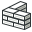

Архитектурный модуль открывает для FreeCAD BIM, c поддержкой таких функций как IFC, полностью параметрических архитектурных объектов, таких как стены, структурные элементы или окна, и богатые возможности создания документации. Архитектурный верстак так же позволяет использование всех инструментов верстака Draft.
Note: The BIM functionality of FreeCAD is now progressively split into this Arch Workbench, which holds all the base BIM tools, and the BIM Workbench addon, that you can install via menu Tools->Addon Manager, that adds a new interface layer on top of the Arch tools, with the aim to make BIM workflow in FreeCAD more intuitive and user-friendly.

Contents
Инструменты
Строительные инструменты
Следующие инструменты используются для создания архитектурных объектов.
-
 Стена: Создаёт стену с нуля или используя выбранный объект в качестве базиса
Стена: Создаёт стену с нуля или используя выбранный объект в качестве базиса -
 Структура: Создаёт структурный элемент с нуля или используя выбранный объект в качестве базиса
Структура: Создаёт структурный элемент с нуля или используя выбранный объект в качестве базиса
-
 Армирование: Создаёт арматуру в выбранном структурном элементе
Армирование: Создаёт арматуру в выбранном структурном элементе
-
 Этаж: Создаёт этаж, включающий выбранные объекты
Этаж: Создаёт этаж, включающий выбранные объекты -
 Здание: Создаёт здание, включающий выбранные объекты
Здание: Создаёт здание, включающий выбранные объекты -
 Место: Создаёт место строительства для выбранных объектов
Место: Создаёт место строительства для выбранных объектов -
 Окно: Создаёт окно на базе выбранного объекта
Окно: Создаёт окно на базе выбранного объекта -
 Пространство: Добавляет в документ вид в сечении
Пространство: Добавляет в документ вид в сечении
-
 Ось: Добавляет в документ систему осей
Ось: Добавляет в документ систему осей
-
 Крыша: Создает наклонную крышу от выбранной грани
Крыша: Создает наклонную крышу от выбранной грани -
 Пространство: Создаёт в документе объект пустого пространства
Пространство: Создаёт в документе объект пустого пространства -
 Лестницы: Создаёт в документе лестницу
Лестницы: Создаёт в документе лестницу
-
 Панель: Создаёт панель из выбранного двумерного объекта
Панель: Создаёт панель из выбранного двумерного объекта
-
 Каркас: Создаёт каркас по выбранной раскладке
Каркас: Создаёт каркас по выбранной раскладке -
 Оборудование: Создаёт объект оборудования или мебели.
Оборудование: Создаёт объект оборудования или мебели.
- Pipe tools available in version 0.17
-
 Pipe: Создаёт трубу
Pipe: Создаёт трубу -
 Pipe Connector: Создаёт угловое или тройниковое соединение между двумя или тремя трубами
Pipe Connector: Создаёт угловое или тройниковое соединение между двумя или тремя трубами
-
-
 Material: Устанавливает материал выбранных объектов
Material: Устанавливает материал выбранных объектов -
 Schedule: Создаёт различные типы планов и графиков
Schedule: Создаёт различные типы планов и графиков
Инструменты модификации
Следующие инструменты используются для модификации архитектурных объектов.
-
 Cut with plane: Обрезает архитектурный объект в соответствии с планом.
Cut with plane: Обрезает архитектурный объект в соответствии с планом. -
 Добавить компонент: Добавляет объекты к компоненту
Добавить компонент: Добавляет объекты к компоненту -
 Удалить компонент: Исключает объект либо вырезает пространство для объекта из компонента
Удалить компонент: Исключает объект либо вырезает пространство для объекта из компонента -
 Опрос/анкетирование: Открывает/закрывает режим геодезического обследования
Опрос/анкетирование: Открывает/закрывает режим геодезического обследования
Утилиты
Дополнительные инструменты для помощи Вам в исполнении специализированных задач.
-
 Component: Создаёт непараметрический архитектурный компонент
Component: Создаёт непараметрический архитектурный компонент -
 Разделить сетку: Разбивает выбранную сетку на отдельные компоненты
Разделить сетку: Разбивает выбранную сетку на отдельные компоненты -
 Сетка в фигуру: Преобразует сетку в фигуру, объединяя грани в одной плоскости
Сетка в фигуру: Преобразует сетку в фигуру, объединяя грани в одной плоскости -
 Выбрать не-разнородные сетки: Selects all non-solid meshes from the current selection or frm the document
Выбрать не-разнородные сетки: Selects all non-solid meshes from the current selection or frm the document -
 Удалить форму из Архитектуры: Turns cubic shape-based arch object fully parametric
Удалить форму из Архитектуры: Turns cubic shape-based arch object fully parametric -
 Убрать отверстия: Closes holes in a selected shape-based object
Убрать отверстия: Closes holes in a selected shape-based object -  Объединить стенки: Merge two or more walls
-
 Проверь: Проверяет, является ли выбранный объект цельным и не содержит ли дефекты
Проверь: Проверяет, является ли выбранный объект цельным и не содержит ли дефекты -
 Исследователь Ifc: Просматривает содержимое файла IFC
Исследователь Ifc: Просматривает содержимое файла IFC -
 Toggle IFC Brep flag: Требует, чтобы выбранный объект экспортировался как IfcFacetedBrep.
Toggle IFC Brep flag: Требует, чтобы выбранный объект экспортировался как IfcFacetedBrep. -
 3 Views from mesh: Создаёт верхний, фронтальный и боковой виды сетки.
3 Views from mesh: Создаёт верхний, фронтальный и боковой виды сетки. -
 BIM server: Открывает окно BimServer.
BIM server: Открывает окно BimServer. - Git: Обрабатывает файлы с помощью системы контроля версий GIT.
{kind=link}
{kind=link}
предпочтения
-
 Preferences...: Preferences disposable in Arch Module.
Preferences...: Preferences disposable in Arch Module.
Форматы файлов
Программный интерфейс
В архитектурном модуле можно использовать скрипты python и макросы, используя функции Arch Python API.
Учебники